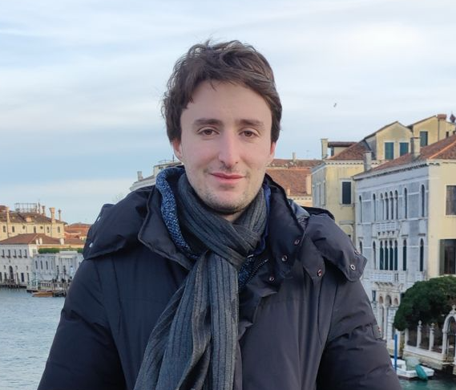

I'm a fourth year Mathematics PhD student at
NYU Courant, advised by
Vlad Vicol. My research
interests are in partial differential equations, with a particular
focus on problems motivated by fluid mechanics.
My research is partially supported by a
Simons Dissertation Fellowship in Mathematics.
Papers
-
Classical Euler flows generate the strong Guderley imploding shock wave
-
Vorticity blowup in 2D compressible Euler equations
Talks
- Student Analysis Seminar, NYU
- APDE Seminar, UPV/EHU
- Turbulence on the Banks of the Arno, Scuola Normale Superiore
- Harmonic Analysis and PDE Seminar, CUNY
- Winter School: Boundary and Singularity in Fluid Mechanics, Simons Center for Geometry and Physics
Teaching
- Honors II
- Honors Analysis II
- Analysis
- Introduction to Math Analysis
Contact
Email: giorgio DOT cialdea AT cims DOT nyu DOT edu
Address: 251 Mercer St, New York, NY, 10002